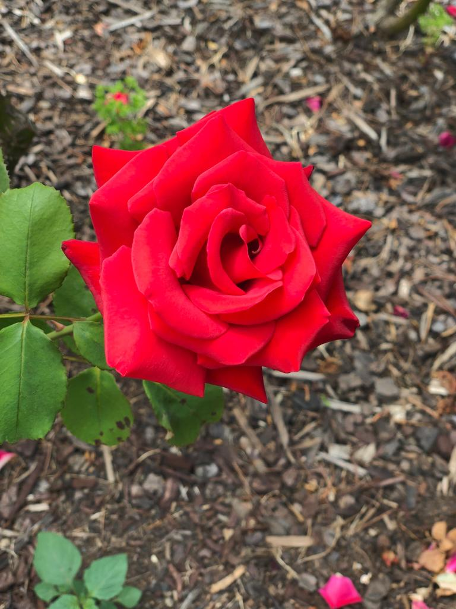
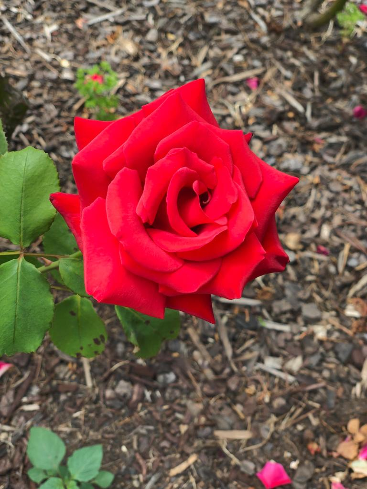
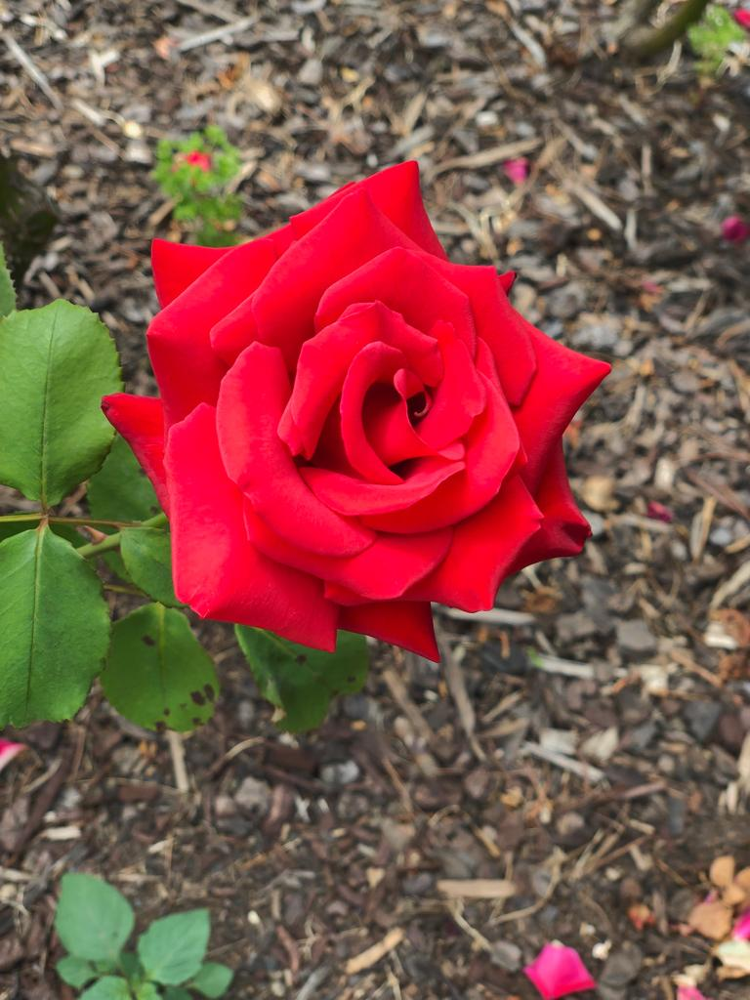
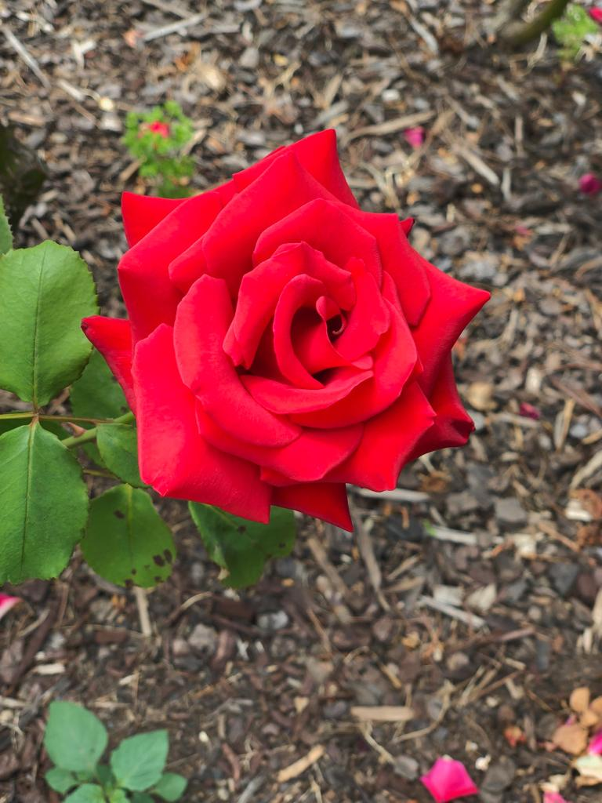

Due to the skills of Photography Pinder has interest in Graphic production. After clicking Beautiful pictures she
design them in diffrent softwares. The best Graphic production Softwares are:
1. Photoshop – graphic design software
It has many good features for the Begginers, for example:
.Basic: Cropping, straightening, rotating and flipping.
.Auto-Fix: One touch adjustment.
.Colour: Slide controls to enhance the colors of the image.
.One-Touch filter: 20 eye-catching effects to choose from.
.Image Rendering: Panoramic image option.
.Borders: Add your personal touch.
.Sharing: via sites like Facebook, Revel, Twitter, Tumblr, and more.